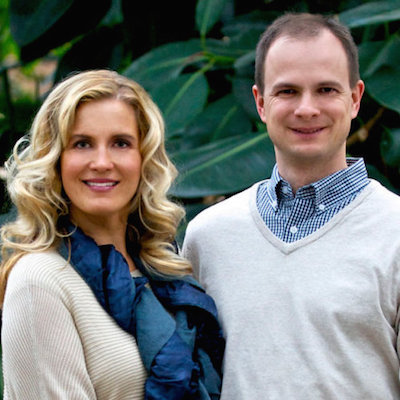

 Patrick and Allyse founded Royal Business Academy where Patrick currently serves and the Managing Director. Family heritage means a lot to the Sedivys. The knowledge of where they came from is shaping the direction of where they are going. Born in Canada to parents from the Czech Republic, Patrick Sedivy has always felt a desire to maintain strong ties to his family’s homeland. As a young man he served a service and humanitarian mission in the Czech Republic. While there, he met his future wife Allyse, who was also serving a humanitarian mission. Fluent in the Czech language and passionate about the country, the Sedivys founded RBA as a way to give back to the country they love. Together, the Sedivys have built several successful businesses, including the largest independently owned bridal store in Utah, an English-as-a-second-language educational program that was implemented in over 700 schools throughout the Czech Republic, and a foundation that pays tuition for Czech students to study and have a cultural experience in the United States. Patrick and Allyse are also currently among doTERRA’s most successful business leaders.